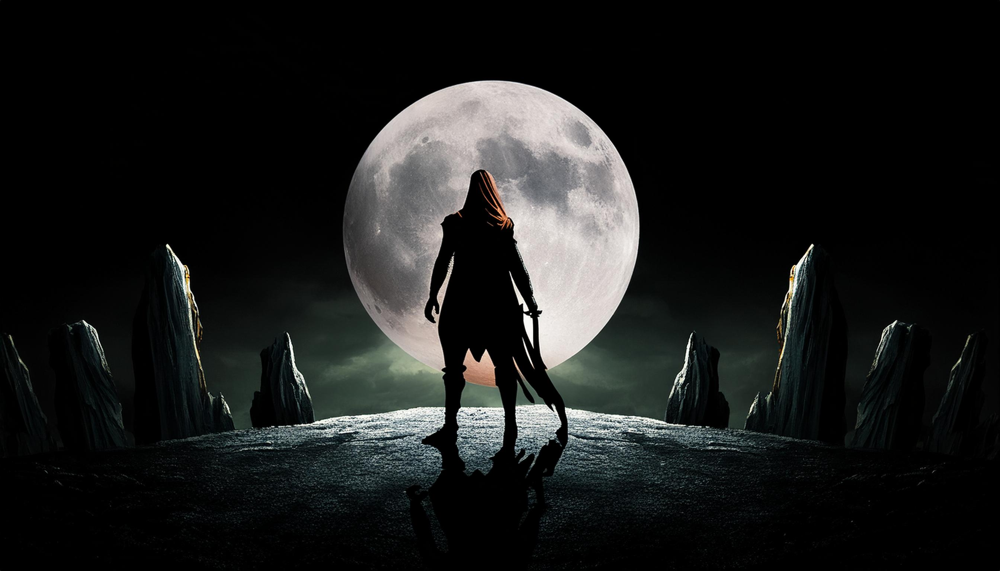
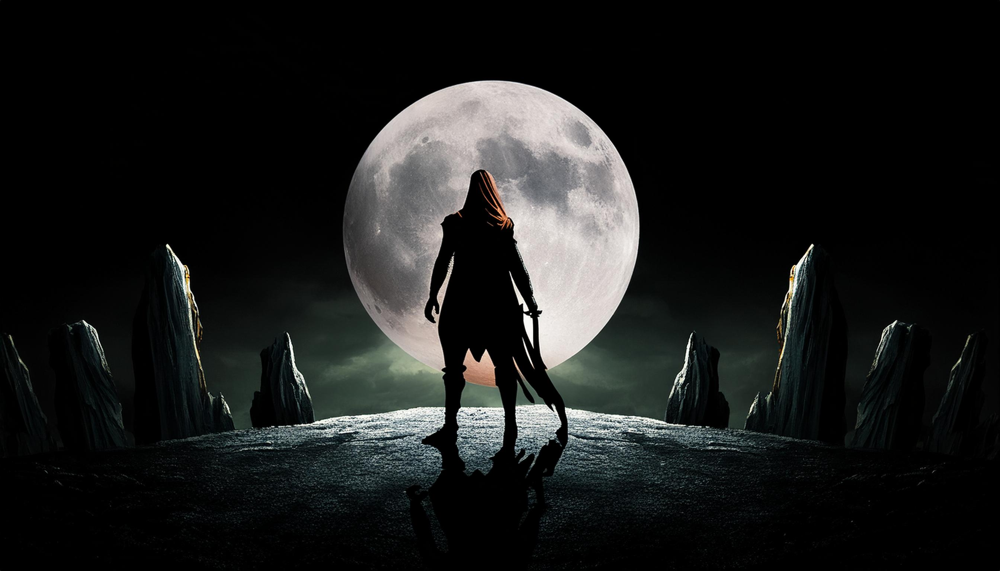

[Name] tar modig beslutningen om å slutte seg til kampen for å redde Eldoria.
Sammen med Pluss og den fremmede gjør de seg klar for den farlige kampen som venter.
Fortsett eventyret[Name] tar modig beslutningen om å slutte seg til kampen for å redde Eldoria.
Sammen med Pluss og den fremmede gjør de seg klar for den farlige kampen som venter.
Fortsett eventyret